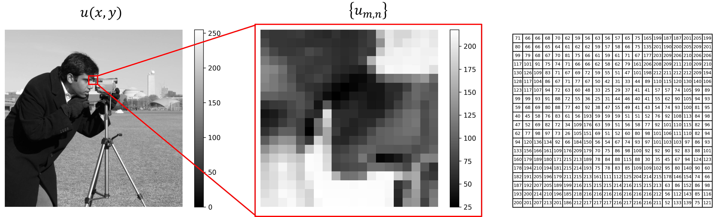
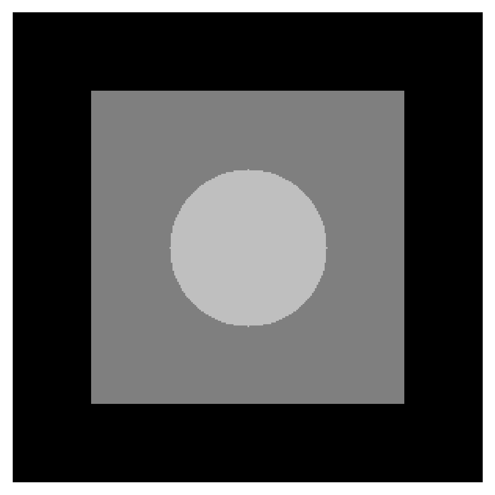

Image Derivatives in Python: Partial Derivatives and Laplacians
This module introduces the fundamental concepts of image derivatives, focusing on partial derivatives for edge detection and Laplacians for highlighting regions of rapid intensity change. Using Python, it demonstrates how these mathematical tools are used in image processing to enhance features and identify contours.
Continuous and Discrete Representations of Images
Continuous Signals: A continuous image can be represented as \(u(x,y)\), where $x$ and $y$ are spatial coordinates, and denotes the intensity or value at that point.
Digital Images: In practice, images are sampled into discrete points. This results in a matrix representation $\{u_{m,n}\}$, where $m$ and $n$ denote row and column indices.
This grouped image provides a comprehensive representation of the process of analyzing pixel intensities within a grayscale image. The first panel displays the original grayscale "cameraman" image, represented as a continuous function $u(x,y)$. The second panel zooms into a specific region of the original image, denoted as $\{u_{m,n}\}$, which corresponds to a discrete subset of the image matrix. The third panel represents the region of interest as a table, where each cell corresponds to a pixel, and the number in the cell indicates its intensity value.
Partial Derivatives in Images
The derivatives of an image correspond to variations in intensity along different directions. For a sampled image $\{u_{m,n}\}$, the partial derivatives are approximated as:
Derivative in the x-direction: $$ \frac{\partial u}{\partial x} \approx u_{m+1, n} - u_{m,n} $$
Derivative in the y-direction: $$ \frac{\partial u}{\partial y} \approx u_{m, n+1} - u_{m,n} $$
These expressions compute the change in intensity between neighboring pixels, which highlights edges and transitions in the image.
The Laplacian, a second-order derivative, combines variations in both directions and is given by:
$$ \nabla^2 u = \frac{\partial^2 u}{\partial x^2} + \frac{\partial^2 u}{\partial y^2} $$In a discrete setting, the Laplacian is approximated as:
$$ \nabla^2 u = u_{m+1, n} + u_{m-1, n} + u_{m, n+1} + u_{m, n-1} - 4u_{m,n} $$The Laplacian is widely used for tasks such as edge detection and image sharpening, as it emphasizes regions with rapid intensity changes.
Python Code
In image processing, derivatives help analyze variations in pixel intensity, aiding in detecting edges, textures, and patterns. Below is a Python implementation for calculating partial derivatives and the Laplacian of a grayscale image. First, import the libraries
import matplotlib.pyplot as plt
from skimage import data
import numpy as np
from scipy.ndimage import laplace
Here we use the grayscale camera man image from skimage.data. The pixel intensities range from 0 to 255. Hence, we normalize it to scale the pixel values to a standard range (e.g., 0–1), making the data uniform and easier to process. It is very important becuase algorithms involving derivatives or filtering can become unstable with large intensity ranges, and normalized values ensure that calculations (e.g., gradients, convolution) are performed on smaller, consistent numbers, reducing the risk of overflow or rounding errors.
# Load and normalize the grayscale image
grayscale = data.camera()
xray_image = (grayscale - np.min(grayscale)) / (np.max(grayscale) - np.min(grayscale))
Next, we calculate the first-order partial derivatives using a finite difference scheme, as shown above.
def finite_difference_derivative(image):
"""
Compute first-order partial derivatives of an image.
"""
# Derivative w.r.t. x (horizontal changes)
du_dx = np.zeros_like(image)
du_dx[:, :-1] = image[:, 1:] - image[:, :-1]
# Derivative w.r.t. y (vertical changes)
du_dy = np.zeros_like(image)
du_dy[:-1, :] = image[1:, :] - image[:-1, :]
return du_dx, du_dy
# Compute partial derivatives
du_dx, du_dy = finite_difference_derivative(xray_image)
To calculate the Laplacian we can use scipy.ndimage.laplace:
# Compute the Laplacian using scipy.ndimage
laplacian_xray = laplace(xray_image)
Finally, visualize the derivatives and the Laplacian of the image:
# Visualization
fig, ax = plt.subplots(2, 2, figsize=(10, 10))
# Original image
ax[0, 0].imshow(xray_image, cmap='gray')
ax[0, 0].set_title('Original Image')
# ∂u/∂x (Horizontal gradient)
ax[0, 1].imshow(du_dx, cmap='gray')
ax[0, 1].set_title(r'$\partial u/\partial x$')
# ∂u/∂y (Vertical gradient)
ax[1, 0].imshow(du_dy, cmap='gray')
ax[1, 0].set_title(r'$\partial u/\partial y$')
# Laplacian (Second-order derivative)
ax[1, 1].imshow(laplacian_xray, cmap='gray')
ax[1, 1].set_title(r'$\nabla^2 u$')
# Disable axes for a cleaner view
for row in ax:
for a in row:
a.axis('off')
# Show the visualization
plt.tight_layout()
plt.show()
By interpreting derivatives in this manner, imaging techniques gain mathematical rigor while retaining intuitive insights. This dual understanding is essential for developing advanced tools in computer vision and image processing. Don't forget to subscribe.
Conclusion
In this analysis, we explored the use of Python for calculating image derivatives and their applications in image processing. Key takeaways include:
- Understanding Image Derivatives: Partial derivatives (\(\partial u/\partial x\) and \(\partial u/\partial y\)) highlight intensity changes in horizontal and vertical directions, making them valuable for edge detection and gradient analysis. The Laplacian (\(\nabla^2u\)) emphasizes regions of rapid intensity variation, aiding in tasks like edge sharpening and texture analysis.
- Importance of Normalization: Normalizing the image ensures uniform intensity values, improves numerical stability, and enhances feature visualization, making computations more robust and results more interpretable.
- Visualization of Results: By visualizing the original image, derivatives, and Laplacian, we demonstrated how these operations reveal essential features and patterns in an image.
Noise in Digital Image Processing: Types and Effects
Noise in digital images comes from two main sources: image acquisition and image transmission.
Image Acquisition: Noise can occur due to environmental conditions or issues with the camera's sensor. For example, a CCD camera might produce noisy images if the light levels are too low or the sensor gets too hot.
Image Transmission: Noise can happen during transmission because of interference in the communication channel. For instance, a wireless network transmission might introduce noise due to lightning or other atmospheric disturbances.
In short, noise is caused by either the camera setup or the way the image is sent from one place to another. In this post, we assume that noise is independent of the spatial coordinates of the image. Additionally, the noise is considered uncorrelated with the image itself, meaning there is no relationship between the pixel values and the noise affecting them.
Noise Probability Density Functions
In image processing, restoration filters are often tested by intentionally adding noise to the original data. This noise is treated as a random variable and is described using a probability density function (PDF). The PDF represents the likelihood of different noise values and helps model how noise affects an image.
To demonstrate the noise models, let's use a simple test pattern to highlight their effects clearly. This pattern consists of uniform regions with three distinct gray levels ranging from black to near white. Its simplicity makes it ideal for visually analyzing how different types of noise affect an image.
Figure 1: Test pattern image with three uniform gray levels ranging from black to near white.
We will apply various noise types to this pattern and display the results along with their histograms to better understand the noise characteristics. Here is the python code to create the test pattern:
import numpy as np
import matplotlib.pyplot as plt
# Create the test pattern
def create_test_pattern():
# Initialize an array with all zeros (black)
pattern = np.zeros((300, 300), dtype=np.float32)
# Add a medium gray rectangle
pattern[50:250, 50:250] = 0.5 # Gray level 0.5
# Add a light gray circle
X, Y = np.meshgrid(np.arange(300), np.arange(300))
circle_mask = (X - 150)**2 + (Y - 150)**2 <= 50**2
pattern[circle_mask] = 0.75 # Gray level 0.75
return pattern
# Create a sample grayscale image (normalized to [0, 1])
image = create_test_pattern()
plt.imshow(image, cmap="gray", vmin=0, vmax=1)
plt.axis('off')
plt.show()
Below are some of the most commonly used PDFs in image processing applications.
Gaussian Noise
Gaussian noise, also known as normal noise, is commonly encountered in digital imaging due to its mathematical convenience in spatial and frequency domains. This noise is typically caused by electronic circuit noise or sensor imperfections. Its PDF, \(p(x)\) follows a bell-shaped curve, and noise values (\(x\)) cluster around a mean (\(\mu\)), with most values lying within a specific range defined by the standard deviation (\(\sigma\)): $$p(x)=\frac{1}{\sqrt{2\pi}\sigma} e^{-(x-\mu)^2/(2\sigma^2)}$$ For example, poor lighting or high sensor temperature can introduce Gaussian noise during image acquisition. The following figure demonstrates the Gaussian noise model:
Below is the python code:
# Function to generate Gaussian noise
def add_gaussian_noise(image, mean=0.15, std=0.05):
# Generate Gaussian noise with mean and std
noise = np.random.normal(mean, std, image.shape)
# Add the noise to the image
noisy_image = image + noise
# Clip to valid range [0, 1] if the image is normalized
return np.clip(noisy_image, 0, 1)
The code for the histogram plot:
fig, ax = plt.subplots(1, 1, figsize=(5, 5))
ax.hist(noisy_image.ravel(), bins=256, range=(0, 1), color='gray')
ax.set_yticks([])
ax.set_xticks([])
plt.show()
Rayleigh Noise
Rayleigh noise is asymmetric and skewed to the right. It is often used to model noise in range imaging applications. Its PDF starts at a minimum value and grows towards a peak before tapering off. This type of noise is useful for approximating certain imaging environments with skewed intensity distributions. To implement the Rayleigh PDF as described in the document, we use the formula: \[ p(x) = \begin{cases} \frac{2}{b} (x - a) e^{-\frac{(x - a)^2}{b}}, & x \geq a \\ 0, & x < a \end{cases} \] where \(a\) is the minimum value of \(x\) for which the PDF is non-zero, and \(b\) is a parameter that controls the spread of the distribution. The following figure demonstrates the Gaussian noise model:
# Add Rayleigh noise
def add_rayleigh_noise(image, scale=0.1):
noise = np.random.rayleigh(scale, image.shape)
noisy_image = image + noise
return np.clip(noisy_image, 0, 1)
To implement it in Python, we use np.random.rayleigh, where the scale parameter determines the spread or width of the distribution. It directly influences the variance and peak of the PDF.
Gamma (Erlang) Noise
Gamma noise, a generalization of Rayleigh noise, is often used in laser imaging systems. It is characterized by a shape parameter and a scale parameter. When the shape parameter is an integer, the distribution is called Erlang noise. Gamma noise appears in laser imaging setups where intensity fluctuations follow specific distributions. The PDF formula is given as \[ p(x) = \begin{cases} \frac{a^b x^{b-1} e^{-a x}}{(b-1)!}, & \text{for } x \geq 0, \\ 0, & \text{for } x < 0. \end{cases} \] where \(x\) is the random variable (intensity value). \(a>0\) is the rate parameter (scale), and \(b\) is the shape parameter (integer). \((b-1)!\) is the factorial of \((b-1)\). The following figure demonstrates the Gamma noise model:
np.random.gamma function:
# Add Gamma noise
def add_gamma_noise(image, shape=2.0, scale=0.05):
noise = np.random.gamma(shape, scale, image.shape)
noisy_image = image + noise
return np.clip(noisy_image, 0, 1)
Exponential Noise
Exponential noise is a simpler form of Gamma noise where the shape parameter equals one. Its PDF decreases exponentially from a peak value. This type of noise occurs in scenarios with a rapid drop-off in intensity, such as certain imaging applications involving lasers. \[ p(x) = \begin{cases} a e^{-a x}, & x \geq 0 \\ 0, & x < 0 \end{cases} \] where \(a\) is the rate parameter, which controls how quickly the probability decreases as \(x\) increases. The following figure demonstrates the exponential noise model:
We can implement it in python using np.random.exponential function:
# Add Exponential noise
def add_exponential_noise(image, scale=0.1):
noise = np.random.exponential(scale, image.shape)
noisy_image = image + noise
return np.clip(noisy_image, 0, 1)
Uniform Noise
Uniform noise assumes that all values within a specified range \([a, b]\) are equally likely. The PDF is constant within this range and zero outside of it. This type of noise is often used in simulations because of its simplicity and even distribution. Although not commonly found in real-world scenarios, uniform noise is useful for testing restoration algorithms.\[ p(x) = \begin{cases} \frac{1}{b - a} & \text{if } a \leq x \leq b, \\ 0 & \text{otherwise.} \end{cases} \] The following figure demonstrates the exponential noise model:
We can implement it in python using np.random.uniform function:
# Add Uniform noise
def add_uniform_noise(image, low=0.0, high=0.2):
noise = np.random.uniform(low, high, image.shape)
noisy_image = image + noise
return np.clip(noisy_image, 0, 1)
Impulse (Salt and Pepper) Noise
Impulse noise, also known as salt-and-pepper noise, appears as random black and white pixels scattered throughout the image. It occurs due to sudden disturbances, such as faulty hardware, transmission errors, or environmental factors during image acquisition. \[ p(z) = \begin{cases} P_a & \text{for } z = a, \\ P_b & \text{for } z = b, \\ 0 & \text{otherwise}. \end{cases} \] where \(a\) is the intensity value of the dark impulse (e.g., black noise), \(b\) is the intensity value of the light impulse (e.g., white noise). \(P_a\) and \(P_b\) are the probabilities of the dark and light impulses, respectively. The following figure demonstrates the exponential noise model:
Python code:
def add_impulse_noise(image, pa, pb):
# Create a copy of the image to add noise
noisy_image = image.copy()
# Total number of pixels in the image
num_pixels = image.size
# Calculate the number of pixels affected by black and white noise
num_black = int(pa * num_pixels)
num_white = int(pb * num_pixels)
# Get random pixel indices for black noise
black_indices = np.random.choice(num_pixels, num_black, replace=False)
# Get random pixel indices for white noise
white_indices = np.random.choice(num_pixels, num_white, replace=False)
# Flatten the image to modify specific pixels
flat_image = noisy_image.flatten()
# Add black (minimum intensity) noise
flat_image[black_indices] = 0 # Assuming 0 is the minimum intensity
# Add white (maximum intensity) noise
flat_image[white_indices] = 255 # Assuming 255 is the maximum intensity
# Reshape the image back to its original shape
noisy_image = flat_image.reshape(image.shape)
return noisy_image
Conclusion
Noise is an inevitable challenge in digital image processing, arising from various sources during acquisition and transmission. Understanding the types of noise, such as Gaussian, Rayleigh, and salt-and-pepper noise, helps in designing effective restoration filters and improving image quality. By modeling noise using PDFs, we can simulate real-world conditions, analyze their impact, and develop solutions tailored to specific noise characteristics.